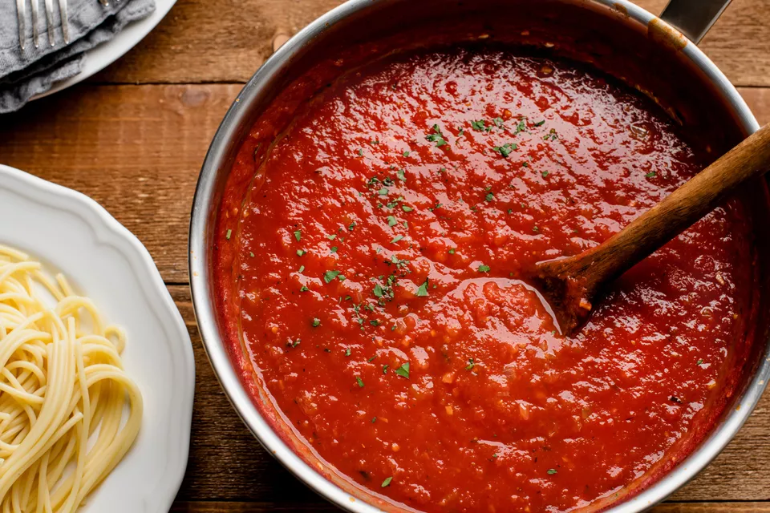

This is one of those family recipes I rarely share with others,
but now it's finally time to share the pure AWESOMENESS
of this spicy tomato sauce my Grandfather perfected to
his taste pallet together with additions from the rest of the family. it's easy and farely quick to make,
but don't wear your best whites cus it's gonna get
sauceyyy!
Ingredients
Makes sauce for half a kilo of Spaghetti
2 Onions
2 Cloves of Garlic
1 dl Olive Oil
700 g Ground beef
6 dl Tomato juice
3 1/2 dl Tomato puree
1 can Tomato paste
4 hot Chili peppers
1 teaspoon Salt
1/2 teaspoon Pepper
1 teaspoon Sugar
12 Stuffed green Olives sliced